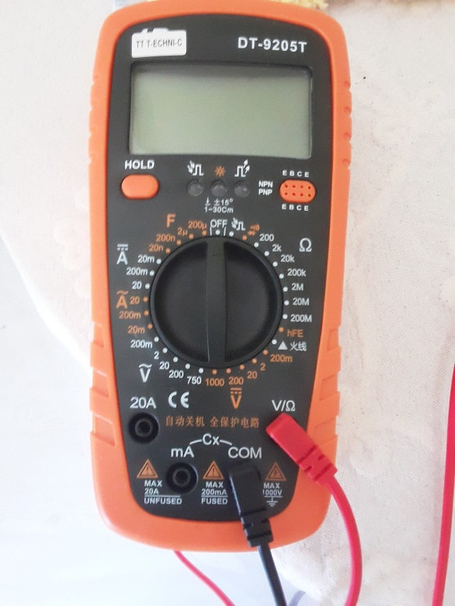
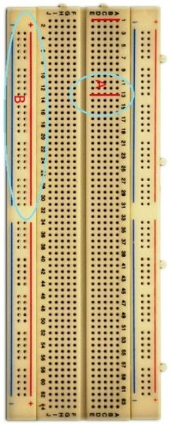

Ölçüm Aleti
Ciddi elektronik işlerine başlamadan önce bir ölçüm aleti almak iyi olur, pek çok farklı ölçümü yapabilen bir alet, dijital daha iyi, alttaki gibi. Bu bizim aldığımız bir gereç çok pahalı değil,

Bu alet direnç, amper, voltaj ölçebiliyor, ve bu son ikisini hem alternatif hem düz akım için yapabiliyor. Voltaj, direnç için kablolar resimde görüldüğü gibi olmalı, eğer akım ölçülecekse o zaman kırmızı kablo ya mA ya da 20A diyen sokete sokulur, ölçülecek akım kuvvetine göre bu seçim yapılmalıdır. Ayrıca hem voltaj hem amper ölçülmeden önce kadranda doğru yerin seçilmiş olması önemli, mesela 2 ile 20 volt arası düz akım voltaj ölçmek istiyorsak kadran sağ alt kısımda üstü düz çizgili V altında, portakal renkli 20 noktasını gösteriliyor olmalı.
Breadboard
Elektronik prototipleme, bir devreyi hemen birleştirip sonucu görmek, test ortamı kurmak için breadboard ise yarar.

Resimde sol kısımda görülen daire içindeki kısım bir dikey iletken kısım, her bir dikey çizgi üzerine düşen delik birbiriyle bağlantılı (iletken). Ortada görülen öbekler ise, mesela sağda daire ve kırmızı çizgi ile gösterdiğimiz bir örnek hat ise kendi içinde yatay iletken. Yani mesela bir direnç ile bir diyot bağlamak istiyorsak, direnç bacağını bir delikten, sonra aynı yatay çizgide olan başka bir deliğe diyot sokunca, bu iki bileşeni bağlamış oluyoruz.
Sağ ve soldaki yatay iletken kısımlar çoğunlukla pilden, ya da başka bir yerden gelen dış akımı devreye vermek için kullanılır.
Bazıları breadboard ile prototipledikleri devreleri olduğu gibi kullanmak isteyebiliyorlar, bu gibi ihtiyaçlar için mini breadboard'lar bile var, üstüne gerekli birkaç öğeyi koyup, birkaç kablo ile bağlayıp kullanıma geçebiliyoruz. Tabii daha ciddi nihai devre üretimi için lehimleme daha iyi oluyor fakat hobi ortamı, ciddi prototipleme için olabilir.